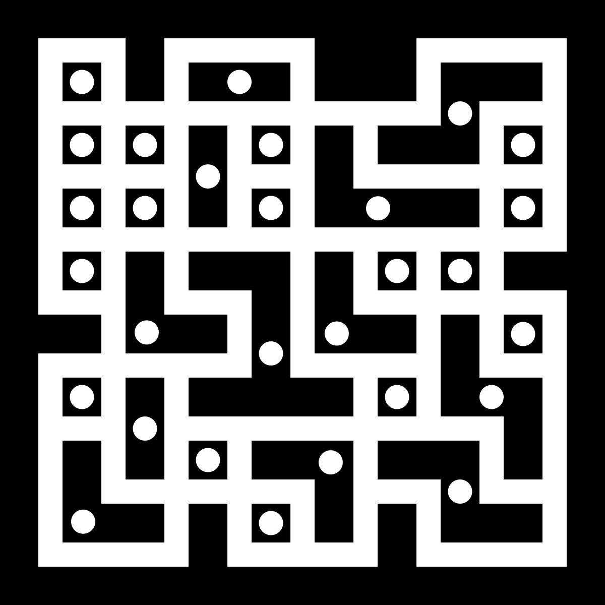
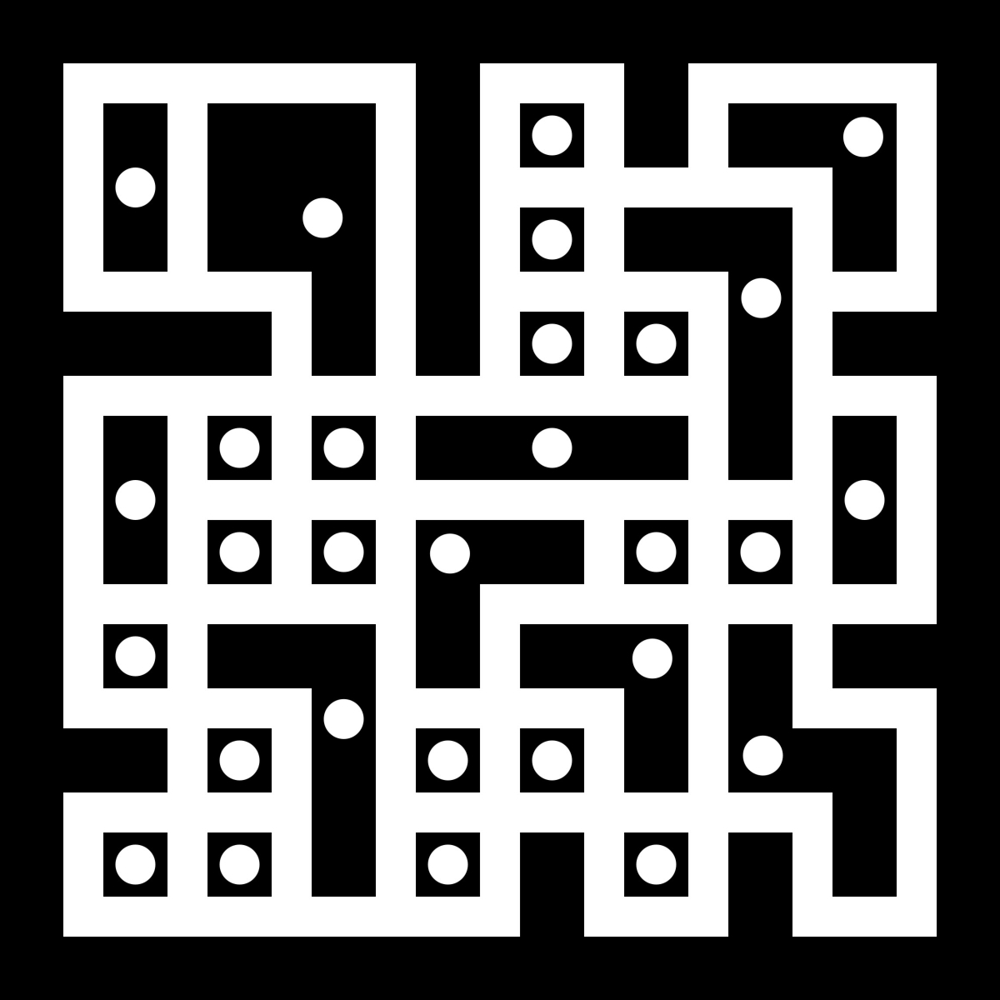
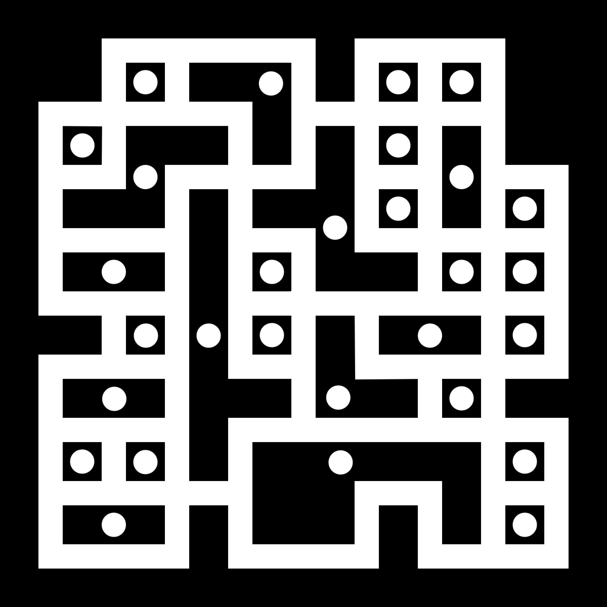
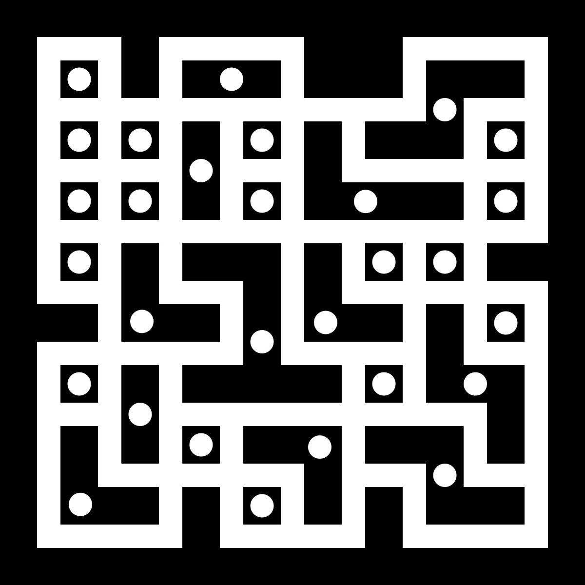
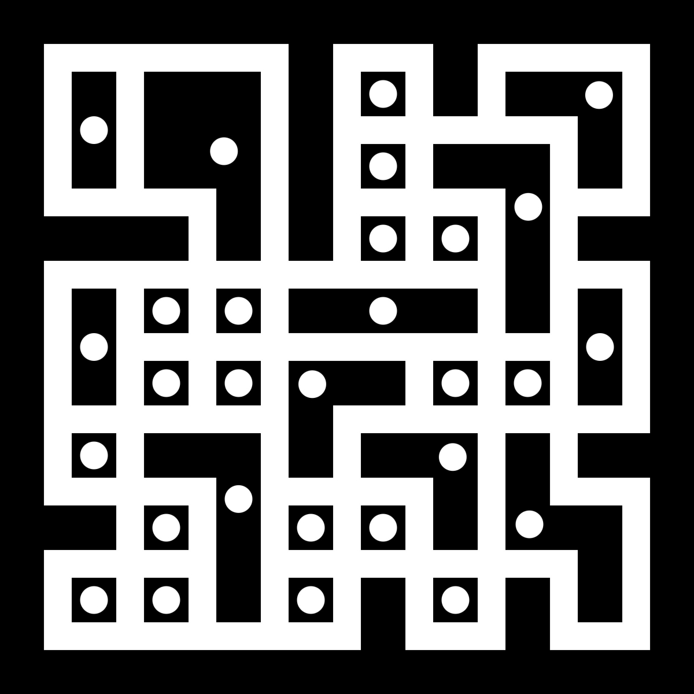
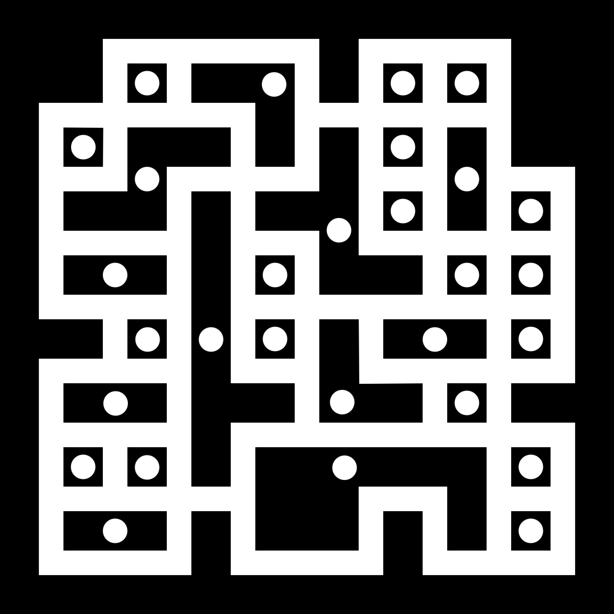

❮
 ❯
❯
“There is a superstition in avoiding superstition”
— Of Superstition, Francis Bacon
Kolam is a traditional visual practice found within Dravida communities such as Tamil, Telugu, Kannadiga, and Malayali. Because some Dravida communities, such as Tamil communities, live outside their native regions, the practice of Kolam extends beyond South India and Sri Lanka to places such as Singapore and Malaysia. Although known as Kolam by Dravidian communities, this visual practice also takes place within North Indian communities practiced as Rangoli. I have taken the practice of Kolam and implemented it as practice of conceptual art by changing the logic and rules behind the creation of the Kolam.
Although Rangoli and Kolam share a lot of common elements, these two practices are also different. Some of the differences between Rangoli and Kolam is that Rangoli is done only on special occasions such as Divali in North India while Kolams are drawn by Tamil communities every day. The Kolams are drawn on the floor in front of thresholds or significant places in the house in the early morning. The Kolams are drawn in order to bring good luck to the household and the family. According to tradition, Kolams are drawn using rice flour so that it is a source of food for ants and other insects throughout the day. The main function of the Kolam functions as a bringer of good luck as the drawing is an invitation to the Goddess Lakshmi, who is the goddess of wealth and good luck, to enter the household and bless the household accordingly. Daily Kolams are simple while on special occasions such as a festival or the birth of a new child the Kolam will be more elaborate. Therefore, just by looking at the Kolam other individuals in the community will know that presently it is not an ordinary day for the household and this can be negative such as a death in the family or positive such as a birth in the family.
Another difference between Rangoli and Kolam is that there is not a significant geometric presence and rules in Rangoli while in Kolams there is a geometric presence and simple rules according to which Kolams are drawn. When creating Kolams, dots are placed on a grid and though lines each dot is encircled where each dot is attributed as one enclosed space. The line is a continuous line which runs around the dots, enclosing each dot and the line returns to its original place. With the line retuning to its original place the line exists as a continuous line. Although it is not a must, most Kolams are drawn symmetrically where symmetry exists on the x-axis, y-axis or exists with radial symmetry. However, symmetry is not a must and there are lots of instances where the symmetry in Kolams does not exist. This kind of geometrical Kolams are known specifically as Sikku Kolams where the word Sikku means ‘Knot’ in Tamil.
Through analysis and experimentation the first new type of Kolam I developed was named Satura Kolam. This new type of Kolam is developed specifically from the traditional Sikku Kolam. Some basic Sikku Kolams made by myself are as follows:
Through the specific practice of Sikku Kolam I developed the Satura Kolam where Satura means ‘Square’ in Tamil. The reason why I used the Tamil equivalent of the word ‘Square’ is that in the Satura Kolam, the smallest space which is possible to create is a square.
The Sikku Kolam was modified in practice and concept which was done through much analysis, sketching and contemplation which resulted in the concept of the Satura Kolam. The main element of the Satura Kolam is that the drawing practice of the Sikku Kolam is inverted where in the Sikku Kolam the dots were placed on a grid according to which the lines were guided, however, in the Satura Kolam it is the lines which are placed on a grid and according to the created enclosed spaces, the dots are placed. In the Sikku Kolam each dot resembles a space which needs to be enclosed by the path of the line so essentially it is the dots which determines the space. In the Satura Kolam, however, it is the lines which determines the space where the lines follow an arbitrary path on a grid and through this arbitrary movement each space which is enclosed completely by the path of the line is visually indicated through the placement of a dot. Each enclosed space is visually communicated to the viewer by a single dot where, one enclosed space is signified by a single dot.
The process of signification of space where one enclosed space is signified by one dot is a common element for the Sikku Kolam and the Satura Kolam. In the Sikku Kolam it is the dot which creates the space according to the placement of the dots on a grid while in the Satura Kolam it is the line which creates the space according to the movement of the line on a grid and the dot is a mere signification of an enclosed space.
In both types of Kolams there is the act of creating space where in the Sikku Kolam the space is already created by the dots placed on a grid and in the Satura Kolam the process of creating space is done through the movement of the line which moves arbitrarily on a grid. Therefore, the process of the Sikku Kolam is inverted in the process of the Satura Kolam where instead of the dots, it is the lines which follow a grid and as a result of the movement of the lines spaces are enclosed. In the Satura Kolam once the enclosed spaces are created as a result of the movement of lines then a dot is placed so that the enclosed space is visually signified through the dot.
The practice of the Satura Kolam is essentially creating space through the movement of lines which creates enclosed spaces according to which dots are distributed. In the Sikku Kolam, the dots are predetermined according to a grid which essentially predetermines space while in the Satura Kolam the path of the lines are predetermined according to a grid which creates space arbitrarily and each enclosed space is signified through the placement of the dot. Therefore, unlike in the Sikku Kolams, in the Satura Kolam spaces are created arbitrarily which are then in turn signified through a dot. The process of the Satura Kolam is essentially an arbitrary creation of space and this function is not present in the practice of Sikku Kolam as in the Sikku Kolam the creation of space is predetermined according to a grid and the function of the creation of arbitrary space sets apart the Satura Kolam from its predecessor.
The function of the Satura Kolam is the same as the function of the Sikku Kolam where, once complete, it essentially functions as a bringer of good luck to a space and most importantly it is an invitation to the Goddess Lakshmi to a space in the hopes that she will bring good luck and good fortune and essentially bless the space. Further, as the act of creating a Kolam is a form of traditional art, therefore, the creation of a Satura Kolam is also an act of creating art where each Satura Kolam exists as a work of art.
It is important to note that in the Sikku Kolam there is only the presence of a single continuous line while in the Satura Kolam there are multiple continuous lines present. Usually about two or three continuous lines are used to create a Satura Kolam. Although many color combinations are possible in the creation of the Satura Kolam, the reason why I used black and white is because the use of black and white gives the Kolams the maximum contrast to the image. Also the use of black and white, resembles the physical Kolams which are done on the floor which are usually done with rice flour which is white on a dark surface.
Through experimentation, in order to preserve the color and contrast of the digital work, it is best to print on photographic paper as a photograph which preserves the quality of the digital document. Printing of the the digital document as a photograph preserves the color and more importantly the contrast of the digital document. The last step is to frame the Satura Kolam accordingly. These digital Satura Kolams are created by myself from scratch using graphic design software and does not use Artificial Intelligence or any other external assistance in anyway. The first series of Satura Kolam is as follows:
 




